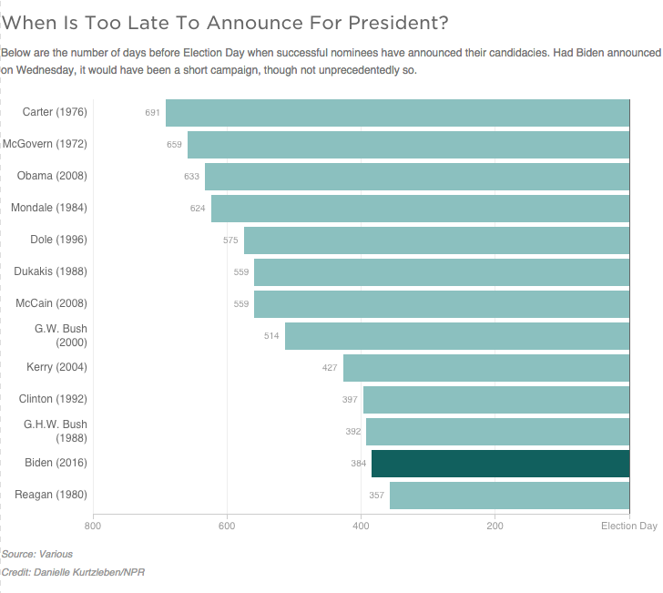

How Late Is Too Late To Announce For President?
Below are the number of days before Election Day when successful nominees have announced their candidacies. Had Biden announced on Wednesday, it would have been a short campaign, though not unprecedentedly so.
